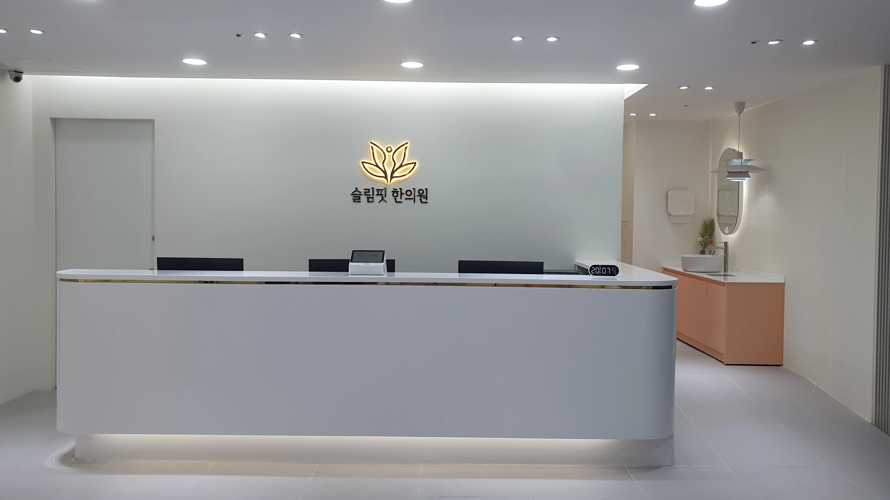
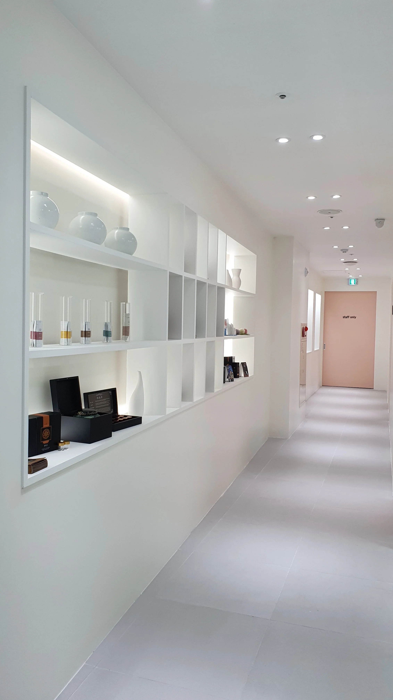
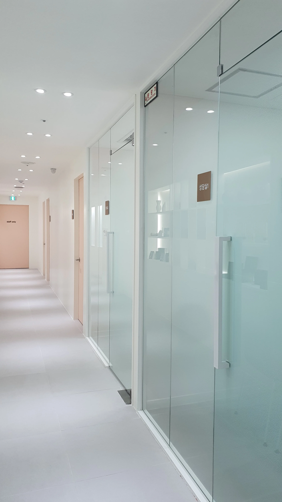

진료 과목
한의원 / 한방병원
시공 구분
신규 개원 시공
시공 자격
실내건축공사업 면허
공간 구조
횡장형 중심축 동선 설계
한의원 공간 기획 및 동선 설계 핵심
가로로 긴 횡장형 평면 구조의 특성을 역으로 활용하여, 환자가 출입문을 열고 들어서는 순간부터 시선이 머무는 중심 축에 병원의 아이덴티티를 입체적으로 조명했습니다.
안내 데스크와 주요 복도 동선, 그리고 집중 진료실 간의 연결을 매끄럽게 구성하여 환자에게는 편안하고 아늑한 치유의 감성을, 의료진에게는 효율적인 진료 동선을 선사합니다.
완공 현장 갤러리

1. 인포메이션 데스크 (Reception Desk)
내원객을 처음 맞이하는 중심 접수 공간입니다. 고급스러운 소재와 간접 조명을 배치하여 신뢰감과 따뜻한 첫인상을 전달합니다.

2. 메인 복도 동선 (Main Corridor)
횡장형 평면의 깊이감을 살린 메인 복도 라인입니다. 자연스러운 시선 유도와 부드러운 조도 설계로 정서적 안정감을 극대화했습니다.

3. 진료실 및 상담 공간 (Clinic Room)
원장님과 환자 간의 1:1 맞춤 진료가 이루어지는 집중 공간입니다. 프라이버시를 완벽히 보호하며 차분하고 신뢰성 높은 인테리어를 완성했습니다.
성공적인 한의원 개원을 위한 맞춤 인테리어 상담
국가 공인 실내건축공사업 면허 보유 전문가가 평면 동선 기획부터 보건소 인허가까지 1:1로 밀착 컨설팅 해드립니다.